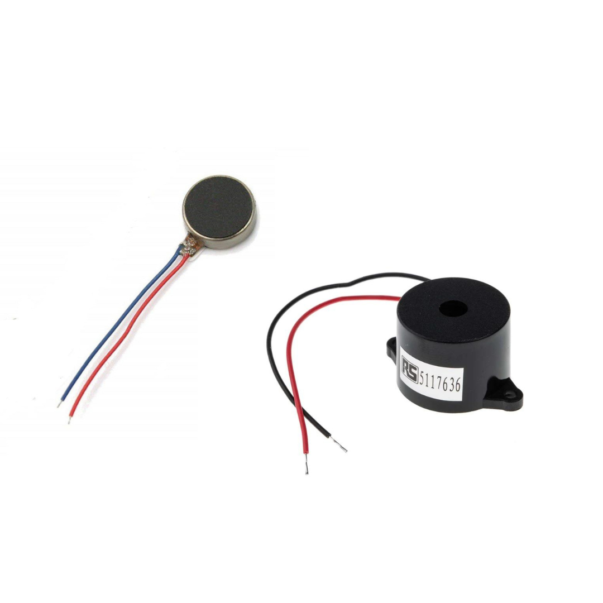

Guardian Hat
A clever invention to help the blind and the deaf.
It's simple yet smart and it will hopefully give me the 7 I need.
It's simple yet smart and it will hopefully give me the 7 I need.

Every year, the world is becoming more urban, and every single day, there are millions of accidents in the city. Now imagine being deaf and blind. Tough right? This isn't easy as some people get dogs to guide them, or a person, or a stick. But they all have their disadvantages. Dogs are hard to find, finding a person that will stick to your whole life is hard, and a stick isn't really practical when faced against multiple types of obstacles. I am not saying my solution is much better than others, I believe my solution has many flaws, but this is my approach to the problem.
There are probably millions of ways to approach this problem and probably millions of methods to reach a solution. But, I would like to use a step by step procedure called Computational Thinking. Computational Thinking may seem like a geeky code language but that is a complete misunderstanding, matter of fact it can probably be applied to any problem. Computational thinking is always separated into 4 parts, Decomposition, Pattern Recognition, Abstraction and Algorithm. To explain this further, I will show you how I used Computational Thinking to create a solution for my problem.
The first step is always Decomposition, and it is to break down the problem into smaller bits each bit of the problem is easier to work around. In my case, the multiple smaller problems I had to face was that if I made a speaker that will warn the user of an obstacle, it wouldn't work for a deaf person and/or if I use a lamp, the blind cannot tell. There are many ways to counter this but I thought that we can use a vibration motor for the deaf and a speaker for the blind.
The second step is to find any patterns and see how we could counter them. First of all, I believe it is very common that these people have lots of issues in avoiding fast moving objects as sticks or dogs can barely react when let's say a bicycle is approaching them as there's just not enough time to react. So to counter this, it is important for me to create something that can detect objects from far and a real time checker so that it will relay information to the user instantly. Another thing is that even if we make an extremely complicated tool for them, it might be difficult for them to set up or wear so it is important that it is easy to use, something like a hat or a belt. The hardest part here is that obstacles range in many shapes, heights, width, danger so it becomes very hard to pick which one to specialize in. But if I was to pick one, I decided that the head was the most important because dogs and sticks detect ground obstacles. Using this pattern, I decided to create a product to protect the head.

The second last step is Abstraction, which is a bit different than the previous two steps in the sense that the past two steps were to break down the problem but abstraction is simplifying our solution so it is more efficient and easier to work with. It is important here that we understand how we are going to detect the obstacles. Do we make an extremely large hat that won't let anything go near me? Will I create a radar on my head that will detect anyone within 2m of me in every direction? Both these ideas are undoubtedly a solution to this problem but is it efficient? Clearly not. The stick idea is impractical because the hat will be too heavy and our solution should only be helping the user and doesn't disturb anyone else. The radar logically makes sense but is it really necessary to detect an obstacle from every direction? I thought that wasn't necessary, a detector that will detect what is ahead of the person is good enough. So, I have decided to use the ultrasonic sensor, basically a radar but a single direction. The sensor is simply a device that emits waves and detects how far the nearest object is.


The final step is to create the Algorithm. An Algorithm is basically a step by step instruction we will relay to the computer so it knows EXACTLY what to do. It is really
important to understand that as a coder, the computer will only do what you tell it to do, nothing less, nothing more. Although many people think algorithm is just a lot
of painful code, you can visually think of it as well. Before I show the image, I would like to explain with words first as then the visual explanation becomes more clear as well.
The algorithm goes like this:
// Constants defining Arduino pin connections
const int TRIG_PIN = 6; // Pin connected to Ultrasonic Sensor's TRIG terminal
const int ECHO_PIN = 7; // Pin connected to Ultrasonic Sensor's ECHO terminal
const int SPEAKER_PIN = 5; // Pin connected to the speaker
const int VIBRATOR_PIN = 4; // Pin connected to the vibrator
// Threshold distance for triggering actions (in centimeters)
const int DISTANCE_THRESHOLD = 50;
// Variables for measuring distance
float duration_us, distance_cm;
void setup() {
Serial.begin(9600);
// Setup code to run once
pinMode(TRIG_PIN, OUTPUT); // Set TRIG_PIN to output mode
pinMode(ECHO_PIN, INPUT); // Set ECHO_PIN to input mode
pinMode(SPEAKER_PIN, OUTPUT); // Set SPEAKER_PIN to output mode
pinMode(VIBRATOR_PIN, OUTPUT);// Set VIBRATOR_PIN to output mode
}
void loop() {
// Main code to run repeatedly
// Generate a 10-microsecond pulse to TRIG_PIN to trigger the ultrasonic sensor
digitalWrite(TRIG_PIN, HIGH);
delayMicroseconds(10);
digitalWrite(TRIG_PIN, LOW);
// Measure the duration of the pulse from ECHO_PIN, which corresponds to the rebound
duration_us = pulseIn(ECHO_PIN, HIGH);
// Calculate the distance in centimeters
distance_cm = 0.017 * duration_us;
// Print the measured distance to the serial monitor
Serial.println(distance_cm);
// Check if the measured distance is below the defined threshold
if (distance_cm < DISTANCE_THRESHOLD) {
Serial.println("ACTION: Turning ON Speaker and Vibrator");
digitalWrite(SPEAKER_PIN, HIGH); // Turn on the speaker
digitalWrite(VIBRATOR_PIN, HIGH); // Turn on the vibrator
} else {
Serial.println("ACTION: Turning OFF Speaker and Vibrator");
digitalWrite(SPEAKER_PIN, LOW); // Turn off the speaker
digitalWrite(VIBRATOR_PIN, LOW); // Turn off the vibrator
}
delay(100); // Delay to control the loop speed
}
You can view the code on Github as well.
A Video of it working